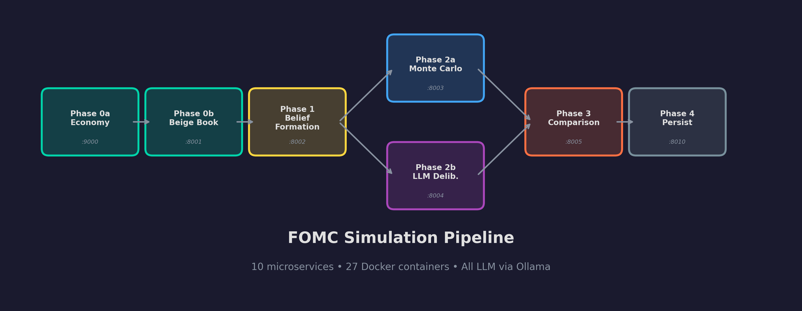
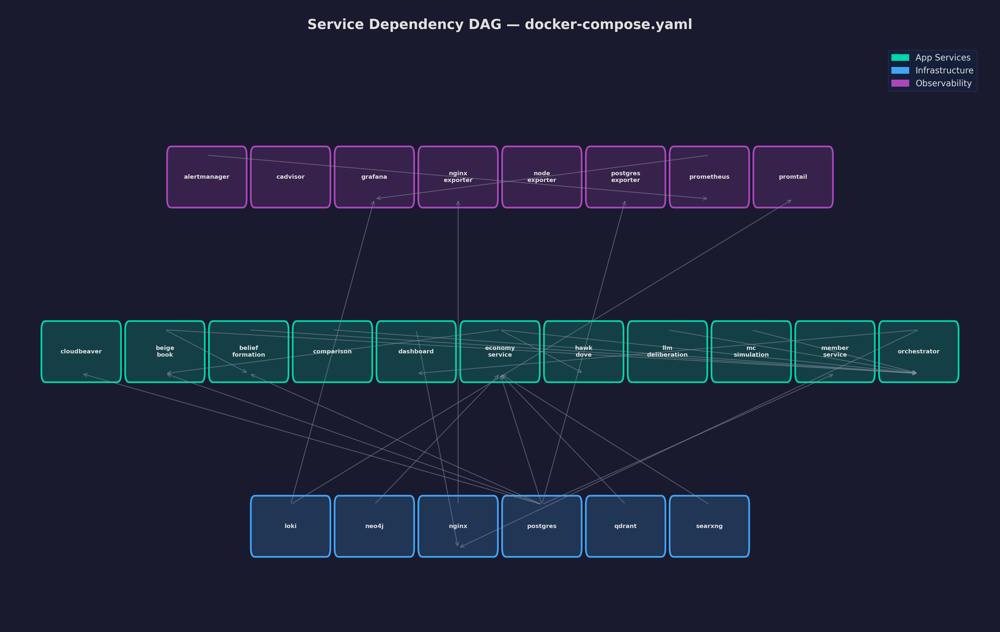

25 Containers, One Make Command: Infrastructure for AI Systems That Actually Work
Docker Compose orchestration, health check cascades, inter-service communication patterns, JWT authentication, and why the most important file in the project is the Makefile.
Here is what happens when you type make up:
Docker Compose reads a 596-line YAML file. It builds 10 application images. It pulls 15 infrastructure images. It starts 25 containers in dependency order on a single bridge network, waiting for health checks to cascade through the service graph. Sixty seconds later, you have a fully operational FOMC simulation platform with observability, authentication, reverse proxy, and log aggregation.
Getting to that point was harder than building any single microservice.
The Service Map
The docker-compose.yaml defines 25 services across three categories:
Application (10): economy (9000), beige-book (8001), belief-formation (8002), mc-simulation (8003), llm-deliberation (8004), comparison (8005), hawk-dove (8006), member-service (8007), orchestrator (8010), dashboard (3002).
Infrastructure (6): PostgreSQL (5432), Qdrant (6333), Neo4j (7474/7687), SearXNG (8888), nginx (80/443), CloudBeaver (8978).
Observability (9): Prometheus (9090), AlertManager (9093), Grafana (3000), Loki (3100), Promtail, node-exporter, cadvisor, postgres-exporter, nginx-exporter.
Each application service follows the same pattern: FastAPI + Uvicorn container, build context at the project root (so the Dockerfile can COPY fomc-common/ — the shared library), environment variables referencing .env for secrets, and PYTHONUNBUFFERED=1 (without it, Python buffers stdout and logs do not appear in docker compose logs until the buffer flushes — I lost two hours on that one).
Health Check Cascades
depends_on with condition: service_healthy creates an implicit dependency DAG:
PostgreSQL (healthy when accepting connections)
→ economy-service (healthy when /health returns 200)
→ orchestrator (needs economy + all phase services)
Qdrant (healthy when REST API responds)
→ economy-service, belief-formation
Ollama (healthy when /api/tags responds)
→ all LLM-dependent services
The orchestrator sits at the top of the graph. It depends on all 8 pipeline services being healthy before accepting simulation requests.
I tuned the health check parameters through trial and error. The start_period is critical: services that load ML models or run database migrations need 30-60 seconds before their first health check. Without a generous start_period, Docker marks them unhealthy during initialization and restarts them in an infinite loop:
healthcheck:
test: ["CMD", "curl", "-f", "http://localhost:9000/health"]
interval: 10s
timeout: 5s
retries: 5
start_period: 60s
The Makefile: 260 Lines of Developer Experience
The Makefile is not just a convenience wrapper. It encodes the project's operational knowledge:
simulate: guard-DATE
@echo "Running simulation for $(DATE)..."
$(call get-token)
curl -s -X POST "http://localhost:8010/simulate/" \
-H "Authorization: Bearer $(TOKEN)" \
-d '{"meeting_date": "$(DATE)"}' | jq .
# Phase-by-phase execution for debugging
phase-0a: guard-DATE
curl -s "http://localhost:9000/v1/snapshot/$(DATE)" | jq .
phase-2-mc: guard-DATE
curl -s -X POST "http://localhost:8003/v1/simulate" \
-d '{"meeting_date": "$(DATE)"}' | jq .
# Generic variable guard
guard-%:
@if [ -z '${${*}}' ]; then \
echo "ERROR: Variable $* is not set."; exit 1; fi
The guard-% pattern checks required variables — make simulate without DATE=2026-01-28 gives a clear error instead of a cryptic curl failure. The phase-by-phase targets exist for debugging — when a simulation fails, they let me isolate which phase broke without re-running the entire pipeline.
Inter-Service Communication
Every service communicates over HTTP using httpx.AsyncClient with a singleton pattern:
_ollama_client: httpx.AsyncClient | None = None
def _get_ollama_client():
global _ollama_client
if _ollama_client is None or _ollama_client.is_closed:
_ollama_client = httpx.AsyncClient(
timeout=httpx.Timeout(
connect=5.0, read=settings.ollama_timeout,
write=10.0, pool=5.0,
),
limits=httpx.Limits(
max_connections=2, max_keepalive_connections=2,
),
)
return _ollama_client
The Limits object caps connections at two — all Ollama-bound services serialize GPU access through asyncio.Semaphore, and more connections than semaphore slots just pile up requests for no benefit. The four-part timeout gives fine-grained control: 5-second connect catches DNS failures fast, while read timeout varies by service based on expected LLM latency.
Service Discovery: Deliberately Boring
No Consul, no etcd, no service mesh. Every URL is an environment variable injected through docker-compose.yaml:
fomc-orchestrator:
environment:
- ECONOMY_SERVICE_URL=http://fomc-economy-service:9000
- BEIGE_BOOK_URL=http://fomc-beige-book:8000
- MC_SIMULATION_URL=http://fomc-mc-simulation:8003
Those hostnames resolve through Docker's built-in DNS on the shared bridge network (internal container ports — host-mapped ports differ, e.g., beige-book maps 8001→8000). Environment variables are the simplest possible abstraction for "where is this service" — every language, every framework, every deployment target understands them.
JWT Authentication
The orchestrator is the only service exposed to external callers. All inter-service communication is authenticated via JWT:
def create_token(client_id: str) -> str:
payload = {
"sub": client_id,
"iat": datetime.utcnow(),
"exp": datetime.utcnow() + timedelta(hours=24),
}
return jwt.encode(payload, settings.jwt_secret, algorithm="HS256")
The JWT secret is generated via ./scripts/generate-jwt-secret.sh (256-bit random string) and never appears in source control. The authentication flow: POST to /auth/token, receive the token, include Authorization: Bearer on subsequent requests.
Dual-Track Caching with Phase Locking
Simulations are expensive. A recent run for the January 2026 meeting clocked 12.3 minutes end-to-end: 2.9 minutes for belief formation (19 agents, each making one Ollama call), 1 second for the Monte Carlo track (10,000 iterations, pure NumPy), and 9.5 minutes for LLM deliberation (5 rounds, 22 statements through Ollama). The GPU-bound phases dominate -- the Monte Carlo track, which uses zero LLM calls, finishes in the time it takes a single agent to generate one paragraph. The orchestrator implements a dual-track cache with phase locking to avoid re-running these expensive phases:
class PhaseLock:
"""Prevent concurrent execution of the same phase for the same date."""
async def execute_or_wait(self, meeting_date, phase, fn, **kwargs):
key = f"{meeting_date}:{phase}"
if key in self._cache:
return self._cache[key]
if key not in self._locks:
self._locks[key] = asyncio.Lock()
async with self._locks[key]:
if key in self._cache:
return self._cache[key] # Another coroutine computed it
result = await fn(**kwargs)
self._cache[key] = result
return result
If two requests hit the same meeting date simultaneously, the second waits for the first to finish rather than running a duplicate simulation. The double-check after acquiring the lock handles the race condition.
One Flat Network
networks:
fomc-network:
driver: bridge
All 25 containers share a single fomc-network bridge. Every service can reach every other service by container name via Docker's built-in DNS. This is deliberately simple — at the scale of a single-machine development platform, network segmentation adds operational complexity without meaningful security benefit. In a production deployment, splitting into separate frontend, backend, data, and monitoring networks (so the dashboard cannot reach PostgreSQL directly, and Grafana cannot hit application services) would be a worthwhile hardening step.
Observability Stack
Every service exposes a /metrics endpoint in Prometheus format. A promtail sidecar ships container logs to Loki. Grafana dashboards (provisioned from ./monitoring/grafana/dashboards/) show:
- Request latency per service (P50, P95, P99)
- LLM inference duration distribution
- Container memory and CPU usage
- Simulation pipeline phase timings
- Error rates and health check status
AlertManager sends notifications when a service's error rate exceeds threshold or when LLM inference latency exceeds 5 minutes.
Lessons Learned
PYTHONUNBUFFERED=1 is non-negotiable. Without it, you are debugging phantom "missing logs" for hours.
Health check start_period prevents restart loops. Services loading ML models need 30-60 seconds before their first check. Without this, Docker marks them unhealthy during initialization and restarts them forever.
Phase-by-phase execution targets save debugging time. When a 5-minute simulation fails, you need to isolate which phase broke without re-running everything.
Boring service discovery works. Environment variables + Docker DNS. No service mesh required at this scale. Add complexity when you need it, not before.
Dual-track caching with phase locking prevents duplicate work. The double-check after lock acquisition handles the race condition that single-check patterns miss.
The infrastructure is the least visible part of the platform and arguably the most important. It is the difference between "I built 10 microservices" and "I built 10 microservices that start in 60 seconds, communicate reliably, and can be debugged when things break."
Subscribe for the series conclusion — the dashboard, backtesting results, and what we learn when we run this system against 6 years of actual FOMC decisions.
— Vincent
Charts

